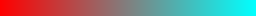

The Plasma effect is a special effect often seen in demos. It uses changing colors to give the illusion of liquid, organic movement. There are many ways to generate Plasma effects, but here we only discuss one method: using the sums of sine functions and some other functions. By experimenting with parameters and trying different kinds of functions, and experimenting with the colors, you'll probably find one that you like.
Before making the actual plasma, let's study a few functions that can be used to generate them.
In JavaScript, Math.sin() returns the sine of a given number, usually within the range of -1 to +1. When the results from different values are plotted, it resembles a wave.
However, there's another way to plot it that's more useful for our purposes — creating an image where the color value of any given pixel is influenced by the value returned by the sine of its coordinates.
The white parts are the peaks of the sine plot, and the black parts are the valleys.
This can be easily done using the following code:
var canvas = document.createElement("canvas");
canvas.width = 256;
canvas.height = 256;
var ctx = canvas.getContext("2d");
var imageData = ctx.createImageData(canvas.width, canvas.height);
for (let y = 0; y < canvas.height; y++) {
for (let x = 0; x < canvas.width; x++) {
let id = (y * canvas.width + x);
let c = 128 + (128 * Math.sin(x / 8));
imageData.data[id] = c;
imageData.data[id + 1] = c;
imageData.data[id + 2] = c;
imageData.data[id + 3] = 255;
}
}
ctx.putImageData(imageData, 0, 0);
document.body.appendChild(canvas);It goes through every pixel, calculates its color with the sine function, and plots it. Pixel color values must be between 0 and 255 here, and since a sine function always returns values between -1 and 1, we transform the value by multiplying it by 128 and adding 128 to it. X is divided by 8 to make the sine appear larger. If you divide it by a smaller value, like 2, you'll get a different sine pattern:
If you add the x- and y-values together, you get a sloped sine pattern:

Another interesting function for plasmas is the sine of the distance from a point to another point.
The distance of a given pixel to the point (0, 0) is Math.sqrt(x * x + y * y). The distance of that same pixel to the center of the canvas is Math.sqrt((x - canvas.width / 2) * (x - canvas.width / 2) + (y - canvas.height / 2) * (y - canvas.height / 2)). Take the sine of that, and you get the following:
Here's the code used to generate this image:
var canvas = document.createElement("canvas");
canvas.width = 256;
canvas.height = 256;
var ctx = canvas.getContext("2d");
var imageData = ctx.createImageData(canvas.width, canvas.height);
for (y = 0; y < canvas.height; y++) {
for (x = 0; x < canvas.width; x++) {
let id = (y * canvas.width + x) * 4;
let c = Math.floor(128 + (128 * Math.sin(Math.sqrt((x - canvas.width / 2) * (x - canvas.width / 2) + (y - canvas.height / 2) * (y - canvas.height / 2)) / 8)));
imageData.data[id] = c;
imageData.data[id + 1] = c;
imageData.data[id + 2] = c;
imageData.data[id + 3] = 255;
}
}
ctx.putImageData(imageData, 0, 0);
document.body.appendChild(canvas);By adding many of these functions together (with different sizes, center points, functions, etc...), and using a more interesting color palette, you can generate plasmas. For example, here's a pattern created using the sum of 2 sines:
It's not the greatest, but it's a plasma, or, at the very least, the start of one. It was created using the sum of a sine of x and a sine of y. At the end, the result is divided by two, to keep the value within the range of 0-255.
var canvas = document.createElement("canvas");
canvas.width = 256;
canvas.height = 256;
var ctx = canvas.getContext("2d");
var imageData = ctx.createImageData(canvas.width, canvas.height);
for (y = 0; y < canvas.height; y++) {
for (x = 0; x < canvas.width; x++) {
let id = (y * canvas.width + x) * 4;
let c = Math.floor(
128 + (128 * Math.sin(x / 8)) +
128 + (128 * Math.sin(y / 8))
) / 2;
imageData.data[id] = c;
imageData.data[id + 1] = c;
imageData.data[id + 2] = c;
imageData.data[id + 3] = 255;
}
}
ctx.putImageData(imageData, 0, 0);
document.body.appendChild(canvas);One way to get both nice colors and animation is to use a color palette, and with each frame, shift the palette by a few values, so all the colors of the plasma that was drawn are rotated around. Since we're using a canvas tag, we'll have to do all of this manually.
Because the colors rotate around, the palette shouldn't have any discontinuities, either within itself or when going from the last color to the first.
This palette has a lot of discontinuities, and thus cannot be used for a plasma effect.
This palette also can't be used due to discontinuities. It may not seem like it does at first glance, but it jumps from cyan back to red, which will be noticeable when it loops.
This palette is perfect for use in plasma effects. It was created using an HSV-to-RGB converter function by looping through the Hue. Since Hue is circular, there are no discontinuities.
The converter function can be found here.
To make a plasma effect this way, generate a palette, generate a plasma buffer that contains the results of each sine function calculation, and then, after these are generated, use them to draw each pixel with the correct color from the palette, then shift the palette every frame.
var canvas = document.createElement("canvas");
canvas.width = 256;
canvas.height = 256;
var ctx = canvas.getContext("2d");
var plasma = [];
var buffer = ctx.createImageData(canvas.width, canvas.height);
var palette = new Array(256);
//Generate the palette
for (let i = 0; i < palette.length; i++) {
palette[i] = hsvToRgb(i / palette.length, 1, 1);
}
//Initialize the plasma buffer
for (y = 0; y < canvas.height; y++) {
plasma[y] = [];
for (x = 0; x < canvas.width; x++) {
plasma[y][x] = Math.floor(
128 + (128 * Math.sin(x / 16)) +
128 + (128 * Math.sin(y / 16))
) / 2;
}
}Once everything is initialized, the main loop begins. There isn't much math involved at this point.
var paletteShift;
function draw(time) {
//Shift the palette as time goes on
paletteShift = Math.floor(time / 10);
//Draw each pixel with the shifted palette
for (let y = 0; y < canvas.height; y++) {
for (let x = 0; x < canvas.width; x++) {
let id = (y * canvas.width + x) * 4;
let c = palette[(plasma[y][x] + paletteShift) % palette.length]
buffer.data[id] = c[0];
buffer.data[id + 1] = c[1];
buffer.data[id + 2] = c[2];
buffer.data[id + 3] = 255;
}
}
//Render the buffer to the canvas and continue the animation
ctx.putImageData(buffer, 0, 0);
window.requestAnimationFrame(draw);
}
//Begin the animation
window.requestAnimationFrame(draw);
document.body.appendChild(canvas);The result looks like this:
That was relatively simple, so it's time to try some more complex plasmas.
In the code, replace the part that generates the plasma with this. It's a sum of 4 sines this time, and one of them even uses the distance formula!
plasma[y][x] = Math.floor(
128 + (128 * Math.sin(x / 16)) +
128 + (128 * Math.sin(y / 8)) +
128 + (128 * Math.sin((x + y) / 16)) +
128 + (128 * Math.sin(Math.sqrt(x * x + y * y) / 8)
) / 4;And here's the result of that:
Here's another function you can try. This one uses a cosine as well as sines; this probably could have been mentioned earlier, but you can use pretty much any trigonometric function to generate a plasma.
plasma[y][x] = Math.floor(
128 + (128 * Math.sin(x / 16)) +
128 + (128 * Math.sin(y / 32)) +
128 + (128 * Math.sin(Math.sqrt(x * x + y * y) / 16)) +
128 + (128 * Math.cos((x + y) / 8))
) / 4;And here's what that looks like:
As you can see, there are a lot of ways to create a plasma, and you can keep changing the parameters until you find one that looks nice.
To conclude this section, let's try a different palette. Replace the code that generates the palette with the following:
for (let c = 0; c < palette.length; c++) {
palette[c] = [];
palette[c][0] = Math.floor(128 + (128 * Math.sin(Math.PI * i / 32)));
palette[c][1] = Math.floor(128 + (128 * Math.sin(Math.PI * i / 64)));
palette[c][2] = Math.floor(128 + (128 * Math.sin(Math.PI * i / 128)));
}This creates the following palette:
This new palette is tileable (both ends are a shade of blue-gray). To make sure any palette you generate is tileable, multiply the current index by π, then divide it by a power of 2 inside a sine.
Here's the same plasma as before, but with the new color palette:
Here's another palette that creates a pretty interesting effect.
for (let c = 0; c < palette.length; c++) {
palette[c] = [];
palette[c][0] = Math.floor(128 + (128 * Math.sin(Math.PI * i / 16)));
palette[c][1] = Math.floor(128 + (128 * Math.sin(Math.PI * i / 128)));
palette[c][2] = 0;
}Palette:
Plasma:
Instead of using a palette and looping through it, you can instead calculate the sine functions every frame, and actually change the sines every frame by bringing the animation time into these functions. You can generate Red, Green, and Blue values separately with this. Of course, it's going to be calculating a lot of sine values every frame, so it's probably going to be slower than the palette looping method, but it's still worth mentioning for a number of reasons, chief among them being the fact that the shape of the plasma will change as time goes on.
The distance formula is defined as a function here. dist(a, b, c, d) will return the distance between point (a, b) and (c, d).
Every frame, for every pixel, it calculates a value that is the sum of 4 sines of 4 different distances. Then, out of this value, a color value is calculated, and this color value is assigned to individual entries in the buffer ImageData's data table. Due to the way the color is calculated, the color will exist out of different discrete values, so that the effect looks a lot like different cells.
var canvas = document.createElement("canvas");
canvas.width = 256;
canvas.height = 256;
var ctx = canvas.getContext("2d");
var buffer = ctx.createImageData(canvas.width, canvas.height);
function dist(a, b, c, d) {
return Math.sqrt((a - c) * (a - c) + (b - d) * (b - d));
}
function draw(time) {
let plasmaTime = time / 50;
for (y = 0; y < canvas.height; y++) {
for (x = 0; x < canvas.width; x++) {
let value = Math.sin(dist(x + plasmaTime, y, 128, 128) / 8) + Math.sin(dist(x, y, 64, 64) / 8) + Math.sin(dist(x, y + plasmaTime / 7, 192, 64) / 7) + Math.sin(dist(x, y, 192, 100) / 8.0);
let color = Math.floor(4 + value) * 32;
let id = (y * this.width + x) * 4;
this.buffer.data[id] = color;
this.buffer.data[id+1] = color * 2;
this.buffer.data[id+2] = 255 - color;
this.buffer.data[id+3] = 255;
}
}
ctx.putImageData(buffer, 0, 0);
window.requestAnimationFrame(draw);
}Here's what that looks like in motion:
There are plenty of other things you could do with this. For example, you could generate separate plasmas for each color channel. The possibilities are practically endless.